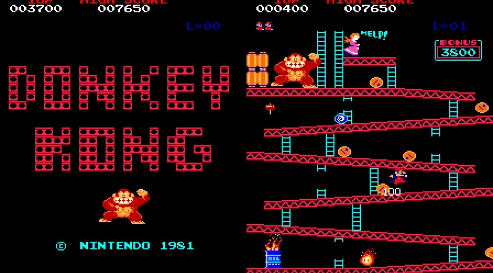

Donkey Kong

Videojuego arcade creado por Nintendo en 1981. Es un primitivo juego del género plataformas que se centra en controlar al personaje sobre una serie de plataformas mientras evita obstáculos. La historia no es muy compleja, pero funcionó en aquella época. El juego consiste en que Mario (llamado "Jumpman" entonces en este videojuego,) debe rescatar a una dama (Pauline) que había sido capturada por un enorme gorila llamado Donkey Kong. Estos dos personajes se volvieron de los más famosos de Nintendo.